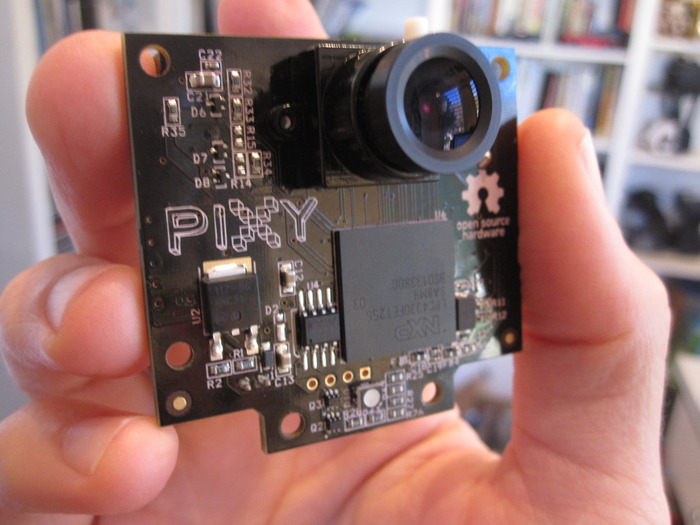
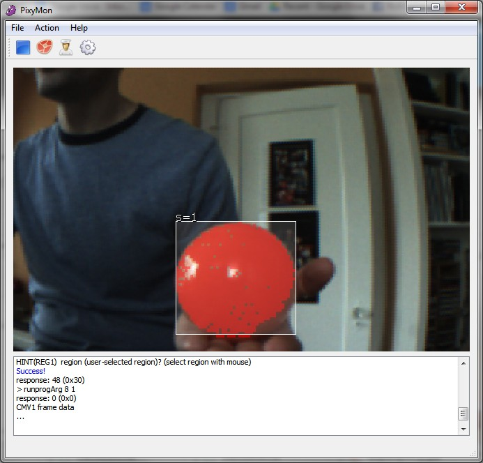
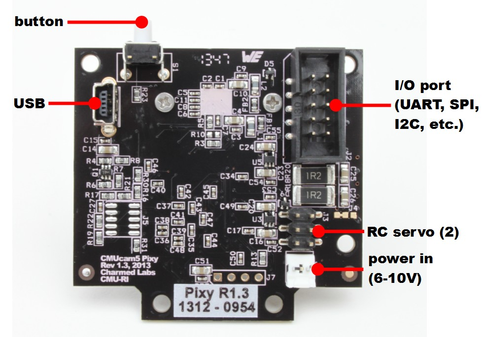
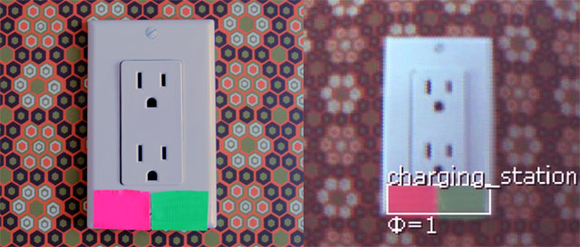

Overview

- Small, fast, easy-to-use, low-cost, readily-available vision system
- Learns to detect objects that you teach it
- Outputs what it detects 50 times per second
- Connects to Arduino with included cable. Also works with Raspberry Pi, BeagleBone and similar controllers
- All libraries for Arduino, Raspberry Pi, etc. are provided
- C/C++ and Python are supported
- Communicates via one of several interfaces: SPI, I2C, UART, USB or analog/digital output
- Configuration utility runs on Windows, MacOS and Linux
- All software/firmare is open-source GNU-licensed
- All hardware documentation including schematics, bill of materials, PCB layout, etc. are provided
How Pixy got started¶
Pixy (CMUcam5) is a partnership between the Carnegie Mellon Robotics Institute and Charmed Labs. Pixy comes from a long line of CMUcams, but Pixy got its real start as a Kickstarter campaign. It first started shipping in March of 2014, but it's already become the most popular vision system in history! Pixy is funded exclusively through sales, so thank you for making Pixy a success! You can watch the original Kickstarter video below -- it's a good introduction!
Vision as a Sensor¶
If you want your robot to perform a task such as picking up an object, chasing a ball, locating a charging station, etc., and you want a single sensor to help accomplish all of these tasks, then vision is your sensor. Vision (image) sensors are useful because they are so flexible. With the right algorithm, an image sensor can sense or detect practically anything. But there are two drawbacks with image sensors: 1) they output lots of data, dozens of megabytes per second, and 2) processing this amount of data can overwhelm many processors. And if the processor can keep up with the data, much of its processing power won't be available for other tasks.
Pixy addresses these problems by pairing a powerful dedicated processor with the image sensor. Pixy processes images from the image sensor and only sends the useful information (e.g. purple dinosaur detected at x=54, y=103) to your microcontroller. And it does this at frame rate (50 Hz). The information is available through one of several interfaces: UART serial, SPI, I2C, USB, or digital/analog output. So your Arduino or other microcontroller can talk easily with Pixy and still have plenty of CPU available for other tasks.
It's possible to hook up multiple Pixys to your microcontroller -- for example, a robot with 4 Pixys and 360 degrees of sensing. Or use Pixy without a microcontroller and use the digital or analog outputs to trigger events, switches, servos, etc.
Controller support¶
Pixy can easily connect to lots of different controllers because it supports several interface options (UART serial, SPI, I2C, USB, or digital/analog output), but Pixy began its life talking to Arduinos. Over the last several months we've added support for Arduino Due, Raspberry Pi and BeagleBone Black. Software libraries are provided for all of these platforms so you can get up and running quickly. Additionally, we've added a Python API if you're using a Linux-based controller (e.g. Raspberry Pi, BeagleBone).
Purple dinosaurs (and other things)¶
Pixy uses a color-based filtering algorithm to detect objects. Color-based filtering methods are popular because they are fast, efficient, and relatively robust. Most of us are familiar with RGB (red, green, and blue) to represent colors. Pixy calculates the color (hue) and saturation of each RGB pixel from the image sensor and uses these as the primary filtering parameters. The hue of an object remains largely unchanged with changes in lighting and exposure. Changes in lighting and exposure can have a frustrating effect on color filtering algorithms, causing them to break. Pixy’s filtering algorithm is robust when it comes to lighting and exposure changes.
Seven color signatures¶
Pixy remembers up to 7 different color signatures, which means that if you have 7 different objects with unique colors, Pixy’s color filtering algorithm will have no problem identifying them. If you need more than seven, you can use color codes (see below).
Hundreds of objects¶
Pixy can find literally hundreds of objects at a time. It uses a connected components algorithm to determine where one object begins and another ends. Pixy then compiles the sizes and locations of each object and reports them through one of its interfaces (e.g. SPI).
50 frames per second¶
What does “50 frames per second” mean? In short, it means Pixy is fast. Pixy processes an entire 640x400 image frame every 1/50th of a second (20 milliseconds). This means that you get a complete update of all detected objects' positions every 20 ms. At this rate, tracking the path of falling/bouncing ball is possible. (A ball traveling at 30 mph moves less than a foot in 20 ms.)
Teach it the objects you're interested in¶
Pixy is unique because you can physically teach it what you are interested in sensing. Purple dinosaur? Place the dinosaur in front of Pixy and press the button. Orange ball? Place the ball in front of Pixy and press the button. It’s easy, and it's fast.
More specifically, you teach Pixy by holding the object in front of its lens while holding down the button located on top. While doing this, the RGB LED under the lens provides feedback regarding which object it is looking at directly. For example, the LED turns orange when an orange ball is placed directly in front of Pixy. Release the button and Pixy generates a statistical model of the colors contained in the object and stores them in flash. It will then use this statistical model to find objects with similar color signatures in its frame from then on.
Pixy can learn seven color signatures, numbered 1-7. Color signature 1 is the default signature. To teach Pixy the other signatures (2-7) requires a simple button pressing sequence.
PixyMon lets you see what Pixy sees¶
PixyMon is an application that runs on Windows, MacOs and Linux. It allows you to see what Pixy sees, either as raw or processed video. It also allows you to configure your Pixy, set the output port and manage color signatures. PixyMon communicates with Pixy over a standard mini USB cable.
PixyMon is great for debugging your application. You can plug a USB cable into the back of Pixy and run PixyMon and then see what Pixy sees while it is hooked to your Arduino or other microcontroller -- no need to unplug anything. PixyMon is open source, like everything else.

Technical specs¶
- Processor: NXP LPC4330, 204 MHz, dual core
- Image sensor: Omnivision OV9715, 1/4", 1280x800
- Lens field-of-view: 75 degrees horizontal, 47 degrees vertical
- Lens type: standard M12 (several different types available)
- Power consumption: 140 mA typical
- Power input: USB input (5V) or unregulated input (6V to 10V)
- RAM: 264K bytes
- Flash: 1M bytes
- Available data outputs: UART serial, SPI, I2C, USB, digital, analog
- Dimensions: 2.1" x 2.0" x 1.4
- Weight: 27 grams

What’s a “color code”?¶
A color code (CC) is two or more color tags placed close together. Pixy can detect and decode CCs and present them as special objects. CCs are useful if you have lots of objects you want to detect and identify (i.e. more than could be detected with the seven separate color signatures alone.)
A color code scheme with 2 tags and 4 different colors can differentiate up to 12 unique objects. CCs with 3, 4 and 5 tags and/or more different colors are possible and can allow for many, many more unique objects. (In fact, thousands of unique codes are possible by using CCs with 5 tags and 6 colors.)
Why Color Codes?¶
CCs are useful if you have lots of objects you want to detect and identify, more than could be detected with the seven separate color signatures alone. CCs also improve detection accuracy by decreasing false detections. That is, there is a low probability that specific colors will occur both in a specific order and close together. The drawback is that you need to place a CC on each object you’re interested in detecting. Often the object you’re interested in (yellow ball, purple toy) has a unique color signature and CCs aren’t needed. Objects with CCs and objects without CCs can be used side-by-side with no problems, so you are free to use CCs for some objects and not others.

CCs give you an accurate angle estimate of the object (in addition to the position and size). This is a computational “freebie” that some applications may find useful. The angle estimate, decoded CCs, regular objects and all of their positions and sizes are provided at 50 frames per second.
CCs might be particularly useful for helping a robot navigate. For example, an indoor environment with CCs uniquely identifying each doorway and hallway would be both low-cost and robust.
For more information on Pixy, go here.
Members
Manager: Anthony Rowe, Rich LeGrand, Scott Robinson
Latest news
September 30, 2015
(377 comments)
Pixy for LEGO
August 11, 2015
(417 comments)
February 13, 2015
(89 comments)
January 23, 2015
(72 comments)
July 9, 2014
(59 comments)